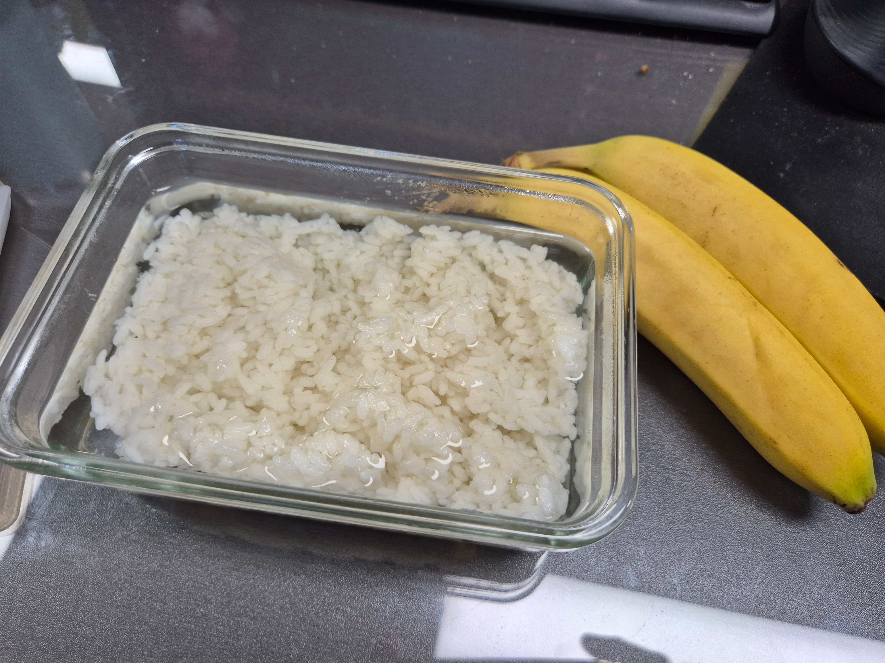

보통 이거에 김이랑 같이 먹는데
애들이 욕해가지고.. 빈약하다고

보통 이거에 김이랑 같이 먹는데
애들이 욕해가지고.. 빈약하다고
김치가 없잖아!
나 오늘 참치캔만 따서 먹었는데 나랑 밥 같이먹장..
개사료도 이거보단 짭짤할듯;
단백질이없군. 균형을 맞추기 위해 두유에 말아먹어보자 ㅋㅋㅋㅋㅋ
치이카와가 너보다 잘 먹고 다니겠다
반찬이 바나나임??
인간적으로 김치는 있어야하는거 아니냐
오이고추도 쌈장에 찍어야지
고기좀먹어! 김치도 좀 먹고
뭘 위한 식단인건지 감도 안오네 그냥 생존이 목적임?
혹시 부모 동남아쪽임?
동남아에서 망고나 파인애플에 밥쳐먹지 않나
환자임?
사료를 먹어야지 왜 물에 밥말어 먹음.
고기좀 먹어..
물밥엔 시골된장으로 짭짤하게 끓인 냉이된장찌개가 제일 잘 어울림
초식동물임?
올챙이배
전장김 한봉이랑 먹으면 좀 괜찮긴 하지
죄수도 이것보단...
이상한거보다 불쌍해
환자임..?
저기에 후리가케 있으면 오차즈케지 뭐..
뭔 탄수화물만 먹네
콩을 넣으면 다 해결 된다.
노름하다 집문서 날렸냐?
영양소가 거의 탄수화물만 있긴 한 듯
겸상하기 싫다
단백질이 아쉽군 아침에 오트치아시드에 그릭요거트 섞어먹는데 단백질을 삶은계란으로만 채우기엔 달걀비린내때문에 힘든데 추천할 만한거 있나? 보름째 인데 솔직히 달걀 뺀적이 한 두번이 아님..
누렁이도 이건 좀 할듯
님 단백질 어디감